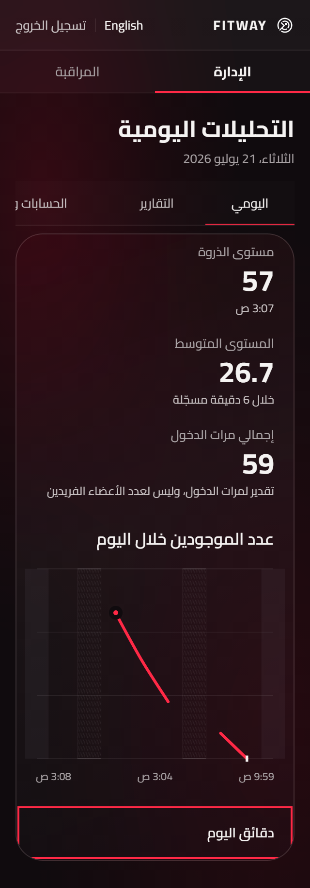
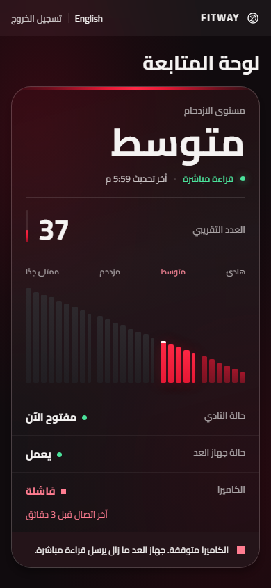

Public · Arabic desktop
Capacity-free public truth; normalized OS/caption chrome.
Public · English mobile
Band order and Western digits preserved.
Login · Arabic desktop
Production PIN behavior preserved.
Login · English mobile
Paper OS chrome is not application content.
Staff · Arabic desktop
Monitoring-only surface.
Staff · Arabic mobile
Truth and health have distinct priority.
Owner shared navigation · English desktop
Uniform translucent material replaces the detached strip; Monitoring / Management follow Paper.
Owner Daily · Arabic desktop
Runtime values and chart gaps differ from Paper fixtures; bounded curve and circular marker preserve truth.
Owner Daily · English mobile
Marker remains circular; table remains available.
Reports · Arabic desktop
Last 28 days restored; full data and CSV behavior retained.
Reports · English mobile
Runtime disclosure and dataset remain truthful.
Accounts · Arabic desktop
Unsupported fixture timestamps omitted.
Accounts · English mobile
Reset credential precedes Deactivate as in Paper.
Activity Log · Arabic desktop
Signed numbers isolated; Apply/Clear aligned to reading start.
Activity Log · English mobile
Single-column filters retain full native option labels and all runtime filters.
System Status · English desktop
Runtime incidents, not illustrative fixture identities.
System Status · Arabic mobile
Accepted stacked records and safe bidi values.
Settings · English desktop
Exact live Paper upper wash and obsidian lower surface; shared navigation inserted.
Settings · Arabic mobile
Five editable axes and five locked values retained.
Repaired edge cases
Daily at 200% — navigation clears the summary; marker remains visible

Camera failure — consistent failure wording and severity
